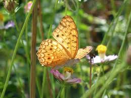
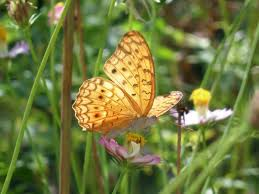

Bishan-Ang Mo Kio is home to a diverse range of flora and fauna, with 66 species of wildflowers, 59 species of birds and 22 species of dragonflies identified as of 2016. The park has attracted many avid birdwatchers, with the Purple-heron, Collared kingfisher, White-breasted waterhen and Scaly-breasted munia among the bird species commonly seen in the park.
 

A community-initiated butterfly habitat has also drawn more than 20 species of butterflies since it was initiated in 2012.

The most well-known animals at the park are a family of 5 otters, dubbed the "Bishan 5" and were first spotted at the park in 2014. It grew to 16 members by 2017, before the father's death in 2018.